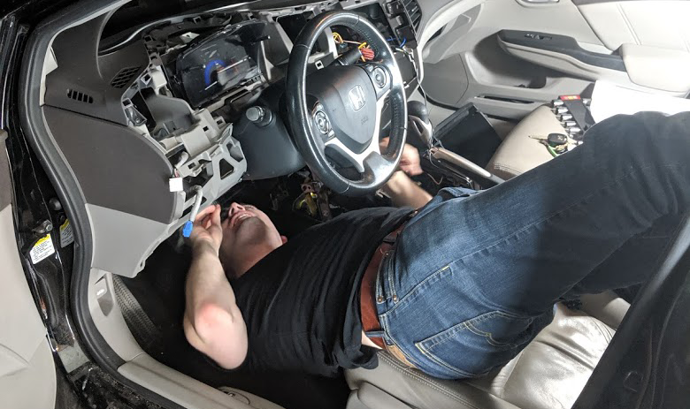
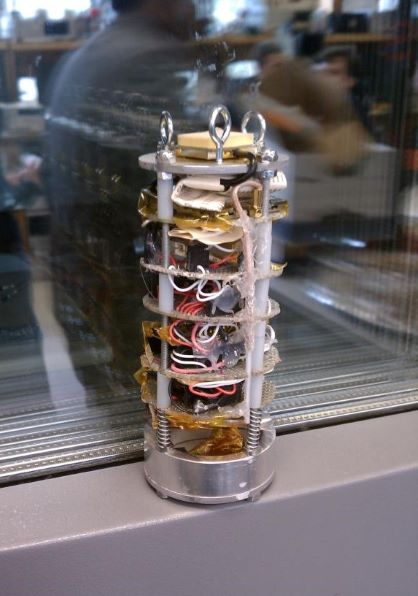

Car Upgrades
 In late-2019 I decided to upgrade my Honda Civic EX-L so that I could have a backup camera and Android Auto. I removed the stock navigation system and installed an Alpine ILX-W650 headunit. This project required me to disassemble most of my car's dashboard and remove the center console. I installed and assembled new cable harnesses, installed a CAN adaptor to allow me to retain my steering wheel controls of my headunit, and installed new wiring to the trunk of the vehicle for my backup camera.
For more information, you can see the pictures I took of the endeavor.
Writing Samples
I've had the good fortune of learning winning a few fellowships in graduate school. Specifically, I won both the 2019's National Science Foundation's Graduate Research Fellowship and the 2019 Department of Defense's National Defense Science and Engineering Graduate Fellowship.
Here's my NSF GRFP personal statement and my research statement. I've also included my NDSEG personal statement and research statement.
Leadership Experience
In college, my peers elected me president of the Penn State IEEE at the conclusion of my sophomore year. As president, I increased IEEE funding from $12,000 to $55,000, I led a 12-person officer team, oversaw 50+ annual events (up from 15), and setup the first on-campus, open-to-the-public makerspace. Further, I allocated resources to increase the organization's outreach footprint by increasing outreach events from 1 event impacting 80 K-12 students annually to four events impacting hundreds of K-12 students annually. Finally, the department of Electrical Engineering at Penn State also appointed me to chair the school of EECS's Undergraduate Advisory Committee and as a member of the school's safety committee; both committees are faculty-level teams.
Here's a summary of my accomplishments while serving as a student leader at Penn State.
Student Training Program: Lead Systems Engineer
 As a freshman at Penn State, I was a member of the student space programs lab and I was appointed the lead systems engineer for a small rocket payload. I led a team of 10 students to construct a payload that would ascent to 10k feet and be deployed from a model rocket. During flight, telemetry, GPS, and weather data would be collected and transmitted in real-time to a base station. On this team, I also designed, assembled, and programmed the power system. This was my first major project in college. The project was launched twice as the first time, the rocket launched itself into the ground.
For more information, here's the project abstract.